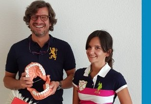

Erfreuen Sie sich am Leben und lachen Sie — mit schönen, gesunden Zähnen.

Markus WerlandDer Arzt
Seit 2002 führe ich meine eigene Praxis in Ewersbach. Was mich antreibt, ist die Überzeugung, dass schöne und gesunde Zähne für mehr stehen als gute Optik — sie stehen für Gesundheit, Vitalität und Lebensfreude. Diesen Anspruch trage ich in jede Behandlung.
Mein Ziel ist eine schnelle, transparente und effektive Versorgung — schonend, mit moderner Technik und auf Augenhöhe mit Ihnen. Sie sollen verstehen, was bei Ihnen geschieht und warum.
Ich verstehe meine Praxis als Gesundheitspraxis mit dem Schwerpunkt ästhetischer Zahnheilkunde. Modernste Verfahren mit nachgewiesener Ergebnisqualität sind dabei selbstverständlich — entscheidend ist aber etwas anderes: dass Sie sich wohlfühlen, verstanden werden und Vertrauen fassen können.
Regelmäßige Fortbildungen halten meine Arbeit auf dem aktuellsten Stand der medizinischen Wissenschaft. Mein Anspruch: Sie sollen mit dem Gefühl gehen, die richtige Entscheidung getroffen zu haben.
Zahnarztangst ist keine Schwäche. Ich nehme das ernst und biete Lachgassedierung an: sicher, nebenwirkungsfrei und sofort nach der Behandlung wieder verkehrstauglich. Oft ist sie der entscheidende Schritt, damit Zahnmedizin wieder möglich wird.
Ich freue mich auf Sie.
— Markus Werland